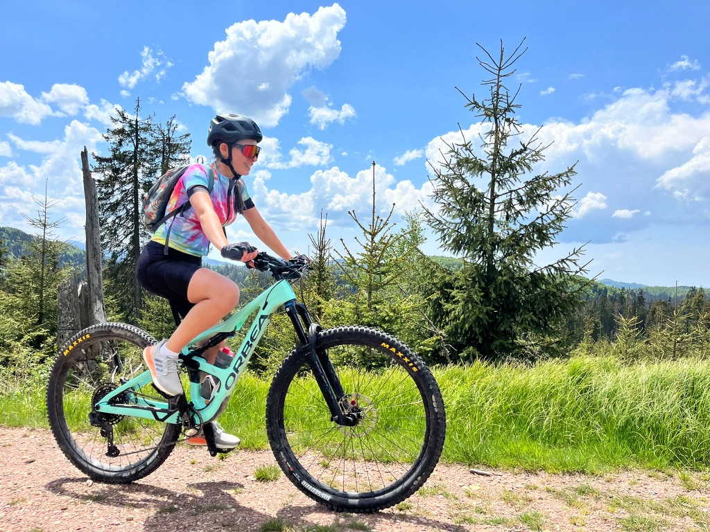
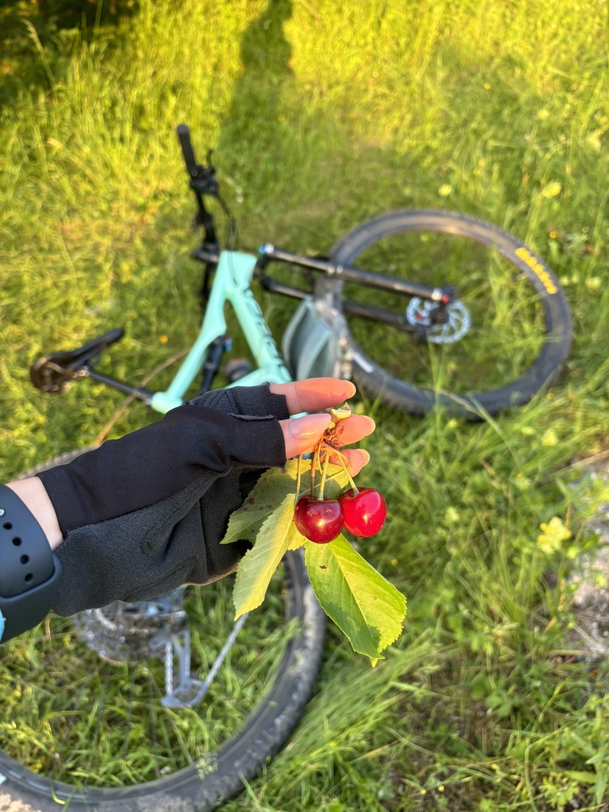
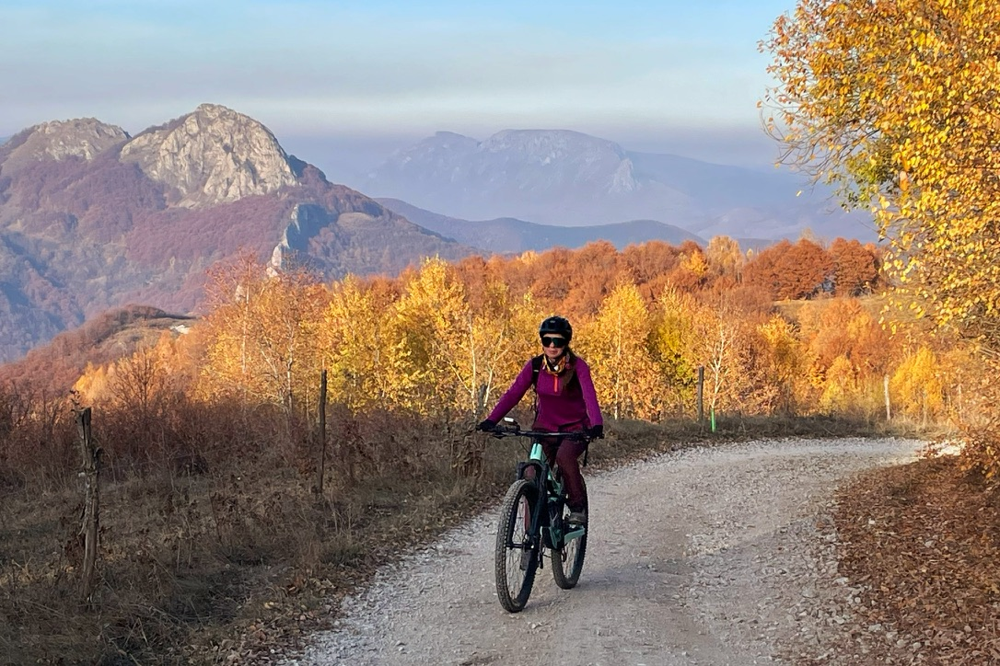
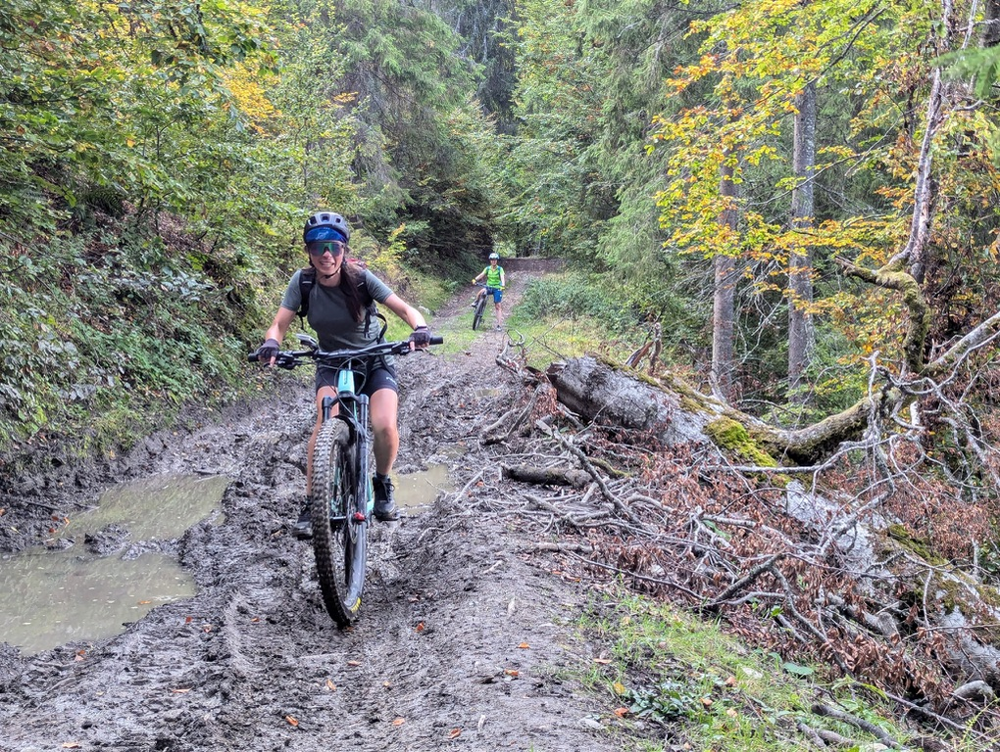

The Orbea is a mint-green full-suspension mountain bike that I have been riding around the mountains near Cluj for longer than I ever expected to. It is the right bike for how I ride — capable on technical terrain, composed on long climbs, quick when the trail opens up. It also looks exactly right in every season, which shouldn't matter but does.
This is not a gear review. It's closer to a thank-you note.
Summer: the first ride

First proper MTB ride. Still figuring out what I'd signed up for.
The first ride on an MTB after riding road bikes and touring bikes is a specific kind of revelation. The geometry is different — lower, more forward, wider bars. The tyres grip things you didn't think tyres could grip. You go over things that would stop a road bike cold. And then there is the suspension, which absorbs the kind of trail feedback your hands would otherwise spend all day complaining about.
I remember being surprised by how much confidence the bike gave me on terrain I hadn't ridden before. That's the thing about a good bike — it doesn't make the trail easier, it makes you feel like you might actually be capable of riding it.
Summer: cherries on the trail

Someone had left a cherry tree next to the trail. The Orbea waited.
There is a particular kind of joy that comes from stopping on a bike ride to eat something you found. The cherries were on a small tree right at the edge of a meadow. Nobody else was around. The Orbea lay in the grass, the evening light was doing something beautiful, and I ate cherries with my gloves on for five minutes while the whole summer seemed to hold still.
This is the part of MTB that nobody puts in the ride summary on Strava. The cherries. The five-minute stop. The grass.
Autumn: the best light the Orbea has ever been in

Autumn near Cluj. The Orbea has never looked better. The mountains behind haven't either.
Autumn in the Apuseni area is one of the most beautiful things I've seen. The colours are not subtle — they are full orange, deep red, the yellows that seem lit from inside. Against a mountain backdrop with morning mist still on the peaks, it's the kind of scenery that makes you stop mid-pedal stroke.
The trail conditions in early autumn are usually the best of the year. The summer dust has settled after the first rains, the trails are packed and fast, and the temperatures are perfect for effort. You can ride all day without overheating and finish with the light still on the mountains.
Mud season: the Orbea's honest phase

Late autumn. The trail said mud. The Orbea said fine.
At some point in October or November, the trails around Cluj go from fast to unrideable and spend a few weeks somewhere in between. This is mud season. Puddles across the line you planned to take. Sections that were grippy last week now require twice the focus and half the speed. Your brakes fill with grit. Your shoes fill with everything.
The Orbea handles mud better than I do. It comes out clean with a hose. I require slightly more effort.
But mud season is worth riding through rather than waiting out. The forest in late autumn, after the leaves have turned and most of them have fallen, has a specific quiet that early summer trails don't have. The light comes through differently. It's a different ride in the same place.
That's what the Orbea has given me most: the same mountains, across different light and different seasons, in a way that never quite repeats. A reason to go out in the rain. A reason to go out when the sun comes back.